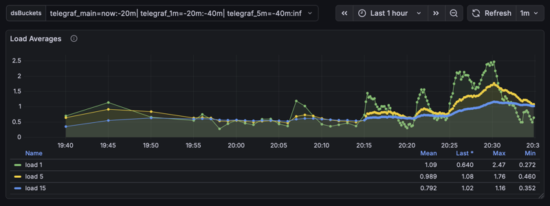

InfluxDB v2 Downsampling#
In this guide I will show you how I’ve implemented InfluxDB 2.x downsampling that plays nicely with Grafana with minimal
changes to queries. Integers and floats are downsampled with mean() and all other types are downsampled with last().
A three line change to Grafana queries will enable it to read narrowed down time ranges for each bucket and combine the
output with union(). Below is an example Grafana panel query change:
// Before
from(bucket: "${BUCKET}")
|> range(start: v.timeRangeStart, stop: v.timeRangeStop)
|> filter(fn: (r) => r.host == "${HOST}")
|> filter(fn: (r) => r._measurement == "mem")
|> aggregateWindow(every: v.windowPeriod, fn: mean, createEmpty: false)
// After
dsQuery = (bucket, start, stop) =>
from(bucket)
|> range(start, stop)
|> filter(fn: (r) => r.host == "${HOST}")
|> filter(fn: (r) => r._measurement == "mem")
|> aggregateWindow(every: v.windowPeriod, fn: mean, createEmpty: false)
${dsPost}
This implementation builds on the very brief InfluxDB v2 example and shows how to consume the downsampled data in Grafana. It turns out the latter was the hardest part to get right.
This guide will walk you through implementing downsampling on a demo TIG stack (Telegraf, InfluxDB, Grafana) using Docker Compose. We’ll implement the following buckets with these retention policies:
telegraf_main: 7 day retention policy, 10 second data resolution, main ingestion bucket
telegraf_1m: 14 day retention policy, 1 minute data resolution
telegraf_5m: no retention policy, 5 minute data resolution, keep historical data forever
I’ll also cover backfilling existing data into the new downsample buckets.
{kind=link}
Prerequisites#
Before starting you’ll need to have Docker Compose installed. You can find those instructions here: https://docs.docker.com/compose/install
Next start the demo TIG stack. This is a basic example with an InfluxDB container, a Telegraf container to send it some data, and a Grafana container to show the data using four graphs. I’ve written a Docker Compose file that starts everything up with one command, pre-configured.
Download docker-compose-dsdemo.yml
Start the apps by running:
docker-compose -f docker-compose-dsdemo.yml -p dsdemo up -d
Access the Grafana dashboard (username is admin and password is Stand&Deliver): http://localhost:13000/
Access the InfluxDB dashboard (username and password are the same as Grafana’s): http://localhost:18086/
After 15 minutes you should see something like this.# |
You should also see something like this.# |
{kind=link}
{kind=link}
Note
In the demo we’ll be using InfluxDB 2.8 but this should work with InfluxDB 2.7 as well. The downsampling is implemented in the Flux language so unfortunately InfluxDB v3 and v1 are not supported.
Create Buckets#
Currently Telegraf writes data to the telegraf_main bucket every 10 seconds, and this bucket stores those data indefinitely. Our goal is to create new buckets to downsample data into and then set a retention policy on the telegraf_main bucket so high resolution data is only stored for 7 days. We’ll create a telegraf_1m bucket to store data with 1 minute resolution (instead of 10 second) with a 14 day retention policy, and we’ll create a telegraf_5m bucket to store data with 5 minute resolution with no retention policy. This last bucket will store our historical data indefinitely.
In the InfluxDB web UI (http://localhost:18086) create your downsample buckets:
Load Data
Buckets
Create Bucket
Name: telegraf_1m
Delete Data > Older Than: 14 days
Create
Repeat for telegraf_5m but instead of “Older Than” select “Never”.
{kind=link}
{kind=link}
Create Tasks#
Warning
Due to an InfluxDB bug you should avoid cloning tasks and instead create each one from scratch as outlined here.
Note
If you get the error “Failed to create new task: Invalid flux script. Please check your query text.” when creating a task this is due to another InfluxDB bug. The workaround I found was to create an empty task first (just put a space instead of the script), then edit it and paste the script you originally intended.
Each downsample bucket will need its own task. The task script below can be pasted without modification for both tasks
because InfluxDB automatically updates the option task statement with whatever you put in the web UI form. Let’s create the
task for telegraf_1m:
In your InfluxDB web UI (http://localhost:18086) go to Tasks > Create Task > New Task
In the left pane/column you can name your task
dsTask-telegraf_1mSet “Every” to
1m(don’t use CRON for this demo)For offset I use
15sto give Telegraf enough time to finish writing data to InfluxDB for each iteration (this won’t affect data timestamps)On the right pane paste the entire script shown below unmodified
Click save
Repeat for
dsTask-telegraf_5mwith “Every” set to5m
// dsTask.flux: Flux task that downsamples one bucket into another.
//
// BSD 2-Clause License
// Copyright (c) 2025, Robpol86
// All rights reserved.
// Redistribution and use in source and binary forms, with or without
// modification, are permitted provided that the following conditions are met:
// 1. Redistributions of source code must retain the above copyright notice, this
// list of conditions and the following disclaimer.
// 2. Redistributions in binary form must reproduce the above copyright notice,
// this list of conditions and the following disclaimer in the documentation
// and/or other materials provided with the distribution.
// THIS SOFTWARE IS PROVIDED BY THE COPYRIGHT HOLDERS AND CONTRIBUTORS "AS IS"
// AND ANY EXPRESS OR IMPLIED WARRANTIES, INCLUDING, BUT NOT LIMITED TO, THE
// IMPLIED WARRANTIES OF MERCHANTABILITY AND FITNESS FOR A PARTICULAR PURPOSE ARE
// DISCLAIMED. IN NO EVENT SHALL THE COPYRIGHT HOLDER OR CONTRIBUTORS BE LIABLE
// FOR ANY DIRECT, INDIRECT, INCIDENTAL, SPECIAL, EXEMPLARY, OR CONSEQUENTIAL
// DAMAGES (INCLUDING, BUT NOT LIMITED TO, PROCUREMENT OF SUBSTITUTE GOODS OR
// SERVICES; LOSS OF USE, DATA, OR PROFITS; OR BUSINESS INTERRUPTION) HOWEVER
// CAUSED AND ON ANY THEORY OF LIABILITY, WHETHER IN CONTRACT, STRICT LIABILITY,
// OR TORT (INCLUDING NEGLIGENCE OR OTHERWISE) ARISING IN ANY WAY OUT OF THE USE
// OF THIS SOFTWARE, EVEN IF ADVISED OF THE POSSIBILITY OF SUCH DAMAGE.
import "types"
// Options for InfluxDB task (will be automatically overridden by InfluxDB).
option task = {
name: "",
every: 0s,
offset: 0s
}
// Set your main bucket name here.
option bucketSourceName = "telegraf_main"
option bucketTargetPrefix = "telegraf_"
// Set backfill.enabled to true when backfilling a new downsample bucket with
// "influx query ...".
option backfill = {
bfEnabled: false,
bfEveryResolution: 1m,
bfChunkStart: 2025-08-01T00:00:00.000000000Z,
bfChunkStop: 2025-08-01T23:59:59.999999999Z,
}
// No need to edit anything beyond this line.
resolution = if backfill.bfEnabled then backfill.bfEveryResolution else task.every
buckets = {
source: bucketSourceName,
target: "${bucketTargetPrefix}${resolution}"
}
// Select all data into this variable.
dataAll =
if backfill.bfEnabled
then from(bucket: buckets.source)
|> range(start: backfill.bfChunkStart, stop: backfill.bfChunkStop)
else from(bucket: buckets.source)
|> range(start: -resolution)
// Integers and floats will be averaged together with mean().
dataToMean = dataAll
|> filter(fn: (r) =>
types.isType(v: r._value, type: "int") or
types.isType(v: r._value, type: "uint") or
types.isType(v: r._value, type: "float")
)
// For all other data types (e.g. strings) we'll select the last value within the time
// range.
dataToLast = dataAll
|> filter(fn: (r) =>
not types.isType(v: r._value, type: "int") and
not types.isType(v: r._value, type: "uint") and
not types.isType(v: r._value, type: "float")
)
// Write aggregated data into the target bucket.
dataToMean
|> aggregateWindow(every: resolution, fn: mean, createEmpty: false)
|> to(bucket: buckets.target)
dataToLast
|> aggregateWindow(every: resolution, fn: last, createEmpty: false)
|> to(bucket: buckets.target)
{kind=link}
{kind=link}
Set Grafana Variables#
In Grafana we will create two variables. The first variable will be where we define which buckets are queried for which time ranges. The second one will contain the Flux script that does the heavy lifting and decides which buckets need to be queried for the current time range.
dsBuckets Variable#
In the Grafana Dashboard (http://localhost:13000) click on “Edit” and then “Settings”
Go to the “Variables” tab then click “New variable”
The variable type is
Custom, the variable name must bedsBucketsIn the “Values separated by comma” text area paste the following code block shown below unmodified
Uncheck “Multi-value”, “Allow custom values”, and “Include All option”
Click “Back to list”
telegraf_main=now:-20m|
telegraf_1m=-20m:-40m|
telegraf_5m=-40m:inf
dsPost Variable#
In the “Variables” tab click “New variable”
The variable type is
Query, the variable name must bedsPost, the data source should beinfluxdbIn the “Query options” text area paste the entire script shown below unmodified
Scroll down and set the refresh setting to
On time range changeUncheck “Multi-value”, “Allow custom values”, and “Include All option”
Leave sorting disabled and leave Regex empty
Click “Back to list” then “Back to dashboard”
Click on “Save dashboard” to save these changes
// dsPost.flux: Query one or more downsample buckets in Grafana.
//
// BSD 2-Clause License
// Copyright (c) 2025, Robpol86
// All rights reserved.
// Redistribution and use in source and binary forms, with or without
// modification, are permitted provided that the following conditions are met:
// 1. Redistributions of source code must retain the above copyright notice, this
// list of conditions and the following disclaimer.
// 2. Redistributions in binary form must reproduce the above copyright notice,
// this list of conditions and the following disclaimer in the documentation
// and/or other materials provided with the distribution.
// THIS SOFTWARE IS PROVIDED BY THE COPYRIGHT HOLDERS AND CONTRIBUTORS "AS IS"
// AND ANY EXPRESS OR IMPLIED WARRANTIES, INCLUDING, BUT NOT LIMITED TO, THE
// IMPLIED WARRANTIES OF MERCHANTABILITY AND FITNESS FOR A PARTICULAR PURPOSE ARE
// DISCLAIMED. IN NO EVENT SHALL THE COPYRIGHT HOLDER OR CONTRIBUTORS BE LIABLE
// FOR ANY DIRECT, INDIRECT, INCIDENTAL, SPECIAL, EXEMPLARY, OR CONSEQUENTIAL
// DAMAGES (INCLUDING, BUT NOT LIMITED TO, PROCUREMENT OF SUBSTITUTE GOODS OR
// SERVICES; LOSS OF USE, DATA, OR PROFITS; OR BUSINESS INTERRUPTION) HOWEVER
// CAUSED AND ON ANY THEORY OF LIABILITY, WHETHER IN CONTRACT, STRICT LIABILITY,
// OR TORT (INCLUDING NEGLIGENCE OR OTHERWISE) ARISING IN ANY WAY OUT OF THE USE
// OF THIS SOFTWARE, EVEN IF ADVISED OF THE POSSIBILITY OF SUCH DAMAGE.
import "array"
import "date"
import "strings"
// Take in any string array and outputs it as a stream so Grafana can ingest it as a
// single or multi-value variable.
exportAsStream = (arr) =>
array.from(rows: array.map(arr: arr, fn: (x) => ({ _value: x })))
// Convert time strings (e.g. "now" or "-3d") into time objects.
stringToTime = (s) =>
if s == "now" then now()
else if s == "inf" or s == "-inf" then date.time(t: inf)
else date.time(t: duration(v: s))
// Parse dsBuckets string into array of strings and stop/stop time objects bound within
// the range of trStart/trStop.
parseBucketsString = (buckets, trStop, trStart) =>
// Split dsBuckets string with pipe delimiter.
// Valid string example: telegraf=now:-5m|telegraf_1m=-5m:-inf
strings.split(v: buckets, t: "|")
|> array.map(fn: (x) => strings.trimSpace(v: x))
// Filter out invalid substrings.
|> array.filter(fn: (x) => x =~ /^[a-zA-Z0-9_-]+=[a-z0-9-]+:[a-z0-9-]+$/)
// Get bucket names and convert start/stop to time objects.
|> array.map(fn: (x) => {
// Split and get the bucket name.
splitEquals = strings.splitN(v: x, t: "=", i: 2)
name = splitEquals[0]
// Split and get the bucket time range.
splitColon = strings.splitN(v: splitEquals[1], t: ":", i: 2)
bStop = stringToTime(s: splitColon[0])
bStart = stringToTime(s: splitColon[1])
return {name, bStop, bStart}
})
// Filter out buckets outside of selected time range.
|> array.filter(fn: (x) => x.bStart < trStop and x.bStop > trStart)
// Adjust start/stop time boundaries for outer buckets.
|> array.map(fn: (x) => {
name = x.name
stop = if trStop < x.bStop then trStop else x.bStop
start = if trStart > x.bStart then trStart else x.bStart
return {name, stop, start}
})
// Return the dsQuery() Flux function call that Grafana will execute for one bucket.
dsPostSingle = (bucket) =>
"dsQuery(bucket: \"${bucket.name}\", start: ${bucket.start}, stop: ${bucket.stop})"
// Return one dsQuery() call per bucket and route the outputs into union() to merge them
// into one metric. Normalize start/stop boundary times so Grafana displays them as one
// line.
dsPostMulti = (parsedBuckets, trStop, trStart) => {
dsQueryCalls = array.map(arr: parsedBuckets, fn: (x) => dsPostSingle(bucket: x))
dsQueryArr = "[" + strings.joinStr(arr: dsQueryCalls, v: ", ") + "]"
dsQueryUnion = "union(tables: ${dsQueryArr})"
dsStartStop = "({ r with _start: ${trStart}, _stop: ${trStop} })"
return "map(tables: ${dsQueryUnion}, fn: (r) => ${dsStartStop})"
}
// Main.
buckets = ${dsBuckets:doublequote}
dsPost =
if buckets !~ /\b(now)\b/
then "error: 'now' is missing"
else if buckets !~ /\b(inf)\b/
then "error: 'inf' is missing"
else () => {
trStop = v.timeRangeStop
trStart = v.timeRangeStart
parsedBuckets = parseBucketsString(buckets, trStop, trStart)
return
if length(arr: parsedBuckets) < 1
then "error: no valid buckets"
else if length(arr: parsedBuckets) == 1
then dsPostSingle(bucket: parsedBuckets[0])
else dsPostMulti(parsedBuckets, trStop, trStart)
}()
exportAsStream(arr: [dsPost])
{kind=link}
{kind=link}
Update Grafana Queries#
Note
Wait 30 minutes for the tasks you created to downsample enough data to show up in the graphs.
It’s time to tie everything together. For each of the four graphs edit the queries and make these changes:
Insert
dsQuery = (bucket, start, stop) =>as the first lineAppend
${dsPost}as the last lineReplace
"${BUCKET}"withbucketReplace
v.timeRangeStartwithstartReplace
v.timeRangeStopwithstop
For example, the following is the before and after for the Memory graph:
// Before
from(bucket: "${BUCKET}")
|> range(start: v.timeRangeStart, stop: v.timeRangeStop)
|> filter(fn: (r) => r.host == "${NAS_HOST}")
|> filter(fn: (r) => r._measurement == "mem" or r._measurement == "swap")
|> filter(fn: (r) => r._field == "used" or r._field == "active")
|> aggregateWindow(every: v.windowPeriod, fn: mean, createEmpty: false)
|> pivot(rowKey: ["_time"], columnKey: ["_field"], valueColumn: "_value")
// After
dsQuery = (bucket, start, stop) =>
from(bucket: bucket)
|> range(start: start, stop: stop)
|> filter(fn: (r) => r.host == "${NAS_HOST}")
|> filter(fn: (r) => r._measurement == "mem" or r._measurement == "swap")
|> filter(fn: (r) => r._field == "used" or r._field == "active")
|> aggregateWindow(every: v.windowPeriod, fn: mean, createEmpty: false)
|> pivot(rowKey: ["_time"], columnKey: ["_field"], valueColumn: "_value")
${dsPost}
The Memory graph should look like this when you click on |
Your dashboard should now look like this.# |
{kind=link}
{kind=link}
Note
If you get the error “invalid: runtime error: schema collision detected: column “raw_value” is both of type int and float”
you’ll need to add toFloat() to cast integers from the main bucket to floats since that’s the datatype used in downsample
buckets.
An example before and after of the fix:
// Before
dsQuery = (bucket, start, stop) =>
from(bucket)
|> range(start, stop)
|> filter(fn: (r) => r.host == "${NAS_HOST}")
|> filter(fn: (r) => r._measurement == "smart_attribute")
|> filter(fn: (r) => r._field == "raw_value")
|> filter(fn: (r) => r.name == "Temperature_Celsius")
|> drop(columns: ["device"])
|> aggregateWindow(every: v.windowPeriod, fn: max, createEmpty: false)
|> pivot(rowKey: ["_time"], columnKey: ["_field"], valueColumn: "_value")
${dsPost}
// After
dsQuery = (bucket, start, stop) =>
from(bucket)
|> range(start, stop)
|> filter(fn: (r) => r.host == "${NAS_HOST}")
|> filter(fn: (r) => r._measurement == "smart_attribute")
|> filter(fn: (r) => r._field == "raw_value")
|> filter(fn: (r) => r.name == "Temperature_Celsius")
|> drop(columns: ["device"])
|> toFloat()
|> aggregateWindow(every: v.windowPeriod, fn: max, createEmpty: false)
|> pivot(rowKey: ["_time"], columnKey: ["_field"], valueColumn: "_value")
${dsPost}
Don’t forget to save your changes to the dashboard.
Backfill Data Guidance#
If you have existing data that you’d like to keep you’ll need to backfill it into the newly created downsample buckets.
Depending on how much data you have, backfilling may take a long time (days, weeks, maybe even months for everything), so it’s advised to do it in chunks. Bigger chunks mean more memory usage in the InfluxDB container, so keeping chunks small avoids OOMKill. When I backfilled my homelab production data for a single telegraf host it took up to 16 minutes for 24 hours of data on an Intel N150.
The dsTask.flux file provided in the Create Tasks section can also be used for backfilling from the command line. Below is a bash script that modifies the file to backfill a chunk (you can run it from the dsdemo-influxdb-1 container):
token="$DOCKER_INFLUXDB_INIT_ADMIN_TOKEN"
chunkstart="2025-08-25T02:00:00.000000000Z"
# To avoid duplicate data chunkstop should not be more recent than the oldest
# data point in the target bucket.
resolution="1m"
bucket="telegraf_${resolution}"
query="from(bucket: \"$bucket\") |> range(start: 0) |> first() |> keep(columns: [\"_time\"]) |> limit(n: 1)"
chunkstop="$(influx query --org homelab --token "$token" "$query" |grep -Pm1 '^2.+Z$')"
sed \
-e '/bfEnabled:/s/:[^,]\+,/: true,/' \
-e '/bfEveryResolution:/s/:[^,]\+,/: '"$resolution"',/' \
-e '/bfChunkStart:/s/:[^,]\+,/: '"$chunkstart"',/' \
-e '/bfChunkStop:/s/:[^,]\+,/: '"$chunkstop"',/' \
./dsTask.flux > backfill.flux
# Backfill chunk.
influx query --org homelab --token "$token" - < backfill.flux >> "backfill-$resolution.log"
Main Bucket Retention Policy#
The last step is to set a retention policy on the telegraf_main bucket to drop old data, now that that data is downsampled to
other buckets. I would advise you to make a backup or snapshot of your influxdb data before implementing this step as there’s
no going back.
In your InfluxDB web UI (http://localhost:18086) go to Load Data > Buckets >
telegraf_main> SettingsSet “Delete Data” to “Older Than” 7 days
Click “Save Changes”
{kind=link}
Your buckets’ retention policies should look like this.#
Performance#
The main benefits with downsampling are reduce disk space usage, reduced CPU load for expensive queries, and reduced query
response times. Below you’ll see some screenshots from my “production” homelab NAS. The total number of rows remains about
the same due to my usage of aggregateWindow(), but you can see the massive improvements in the total request time metric.
{kind=link}
{kind=link}
Conclusion#
You should now have fully implemented downsampling in the TIG demo stack. While I’ve only tested it at a small scale, it’s been working well for the past 6 months on my underpowered NAS running the stack in Docker containers under TrueNAS SCALE. If you ran into problems with this tutorial or encountered issues when scaling this up in production feel free to leave a comment below.
Comments
comments powered by Disqus